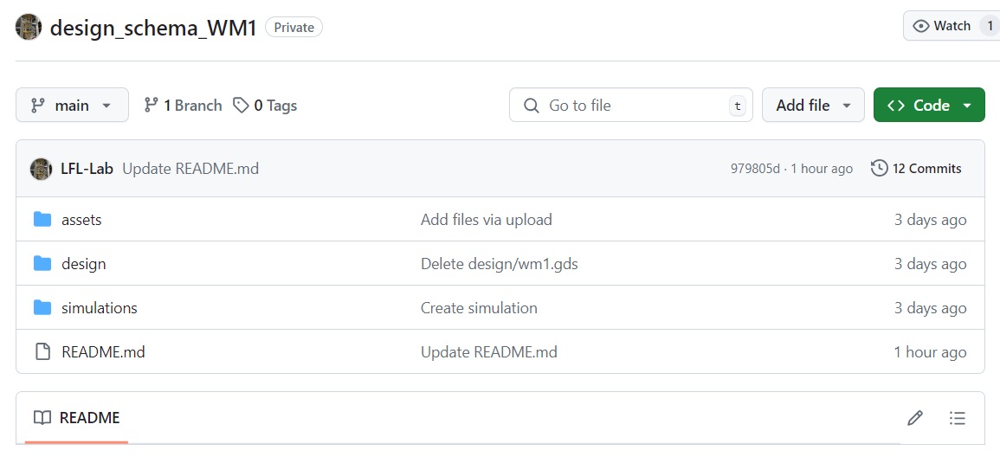
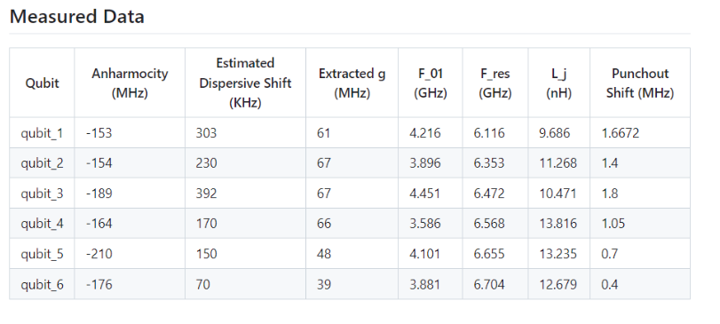

Tutorial 3.5 : Contributing a new database#
In this section, we will go over how to create a new database configuration within the SQuADDS framework.
The most important attribute of a new database configuration is an experimentally verified device. These devices can be used to validate simulations in the SQuADDS database, and allow the SQuADDS program to continue to grow and be used for more design configurations.
Experimentally-validated device results are stored within the experimental-device_attributes column in the HuggingFace database. You can upload an experimentally verified device before any simulations have been performed, or you can use this in conjunction with the previous tutorials to add simulations along with your device.
Github Repository#
In order to add a device to the experimental-device_attributes, you will first need to create a Github repository for your device. This repository has a standard format that you must follow in order to verify that your devices results are valid and can be used for this dataset.
By the end of this part of the tutorial, you will have a github repository for your device that looks like this, and can be used to verify the experimental results of your device.

First, create your repository. The repository should be named design_schema_DEVICENAME or design_schema_DEVICENAME_squadds and should be a public repository.
The README file of this github should include a short description of the device. You MUST also include a table of any main measured results from the device. See Fig. 1. This information will also go into the HuggingFace JSON.
Your README may also include links to any papers associated with the device. You can also add a short sentence about the SQuADDS project to the readme. For example:
“This design schema is associated with the SQuADDS project. More information can be found here: https://lfl-lab.github.io/SQuADDS/”
Contents#
Now, create three folders within this repository to house the assets, designs, and simulations.
Assets
Inside the assets repository, please upload a pdf of the device design. This can be in the form of a scanning electron microscope image, Qiskit Metal model, or artist’s rendition, but it must contain a visual representation of your device structure. This is so that future viewers can understand the structure of your device.
When you upload your device to the HuggingFace database, you will need to include a link to this PNG within your GitHub, so make sure that your save the url address to the image.
The second thing that the assets folder must contain is the GDS file associated with your device.
Design
The design folder should contain IPython or python files associated with the design of your device.
3. Simulations
[ADD THIS LATER]
After you have created these four elements, your Github is now ready and can be uploaded to HuggingFace.
Contributing to HuggingFace#
The process of contributing an experimentally validated design is very similar to contributing other data. However, in this case, you will be adding one row to the existing experimental-device_attributes subset.
Again, the dataset will be in the format of a JSON file. Each contributed experimental device to SQuADDS must AT LEAST have the following fields.
[
{
"design_code": "GITHUB LINK",
"contrib_info": {
"group": "",
"PI": "",
"institution": "",
"uploader": "",
"measured_by": [],
"date_created": "",
"name": "" // this can be a name that your group uses to identify the device },
"measured_results": [
{
"H_params": [
],
"sim_results": [
"associated_simulation_1",
"associated _simulation_n", // please leave blank if there are no associated simulations
],
"image": "GITHUB IMAGE LINK",
This is the same data you have entered previously in the GitHub readme, but formatted as a JSON. See this example:

"measured_results": [
{
"H_params": [
{
"qubit_1": {
"F_res_GHz": 6.116,
"F_01_GHz": 4.216,
"Anharmocity_MHz": -153,
"punchout_shift_MHz": 1.6672,
"Extracted_g_MHz": 61,
"Estimated_Dispersive_shift_KHz": 303,
"L_j_nH": 9.686
},
"qubit_2": {
"F_res_GHz": 6.353,
"F_01_GHz": 3.896,
"Anharmocity_MHz": -154,
"Punchout_shift_MHz": 1.4,
"Extracted_g_MHz": 67,
"Estimated_Dispersive_shift_KHz": 230,
"L_j_nH": 11.268
},
// etc. for more qubits.
}
]
}
],
This can be left blank if you have not run simulations yet within the SQuADDS framework. Please only reference SQuADDS simulations in this attribute.
Optional fields that are in the SQuADDS database include a link to papers associated with the device, as well as a notes column where you can add any notes that people should know about your device. Please note, this can also go into your README.
Once you have the JSON file with all required entries and any optional entries you want, you are ready to make a pull request to the Hugging Face database. Since you will be adding to an existing subset, you can make a pull request to add your files.
Clone/Fork the repository- please see Tutorial 3.
Add your complete JSON to the existing experimental-device_attributes JSON.
Make a pull request to the main SQUADDS_DB.
Once you have made a pull request, we will review the GitHub repository and JSON file to make sure all information is correct.
Thank you for your contribution to SQuADDS 🤗🎉.
<!–CODE PART You can also follow a similar process to single-entry validated desings.
from squadds.database.contributor import ExistingConfigData
data = ExistingConfigData('experimental-device_attributues')
python data.show_config_schema()>
License#
This code is a part of SQuADDS
Developed by Sadman Ahmed Shanto
This tutorial is written by Elizabeth Kunz
© Copyright Sadman Ahmed Shanto & Eli Levenson-Falk 2023.
This code is licensed under the MIT License. You may obtain a copy of this license in the LICENSE.txt file in the root directory of this source tree.
Any modifications or derivative works of this code must retain thiscopyright notice, and modified files need to carry a notice indicatingthat they have been altered from the originals.